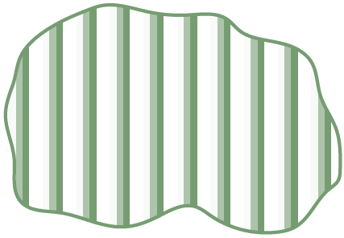
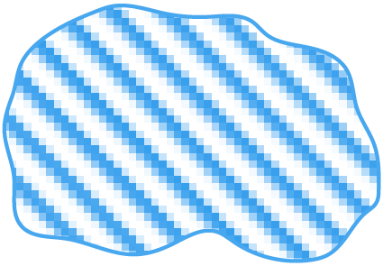
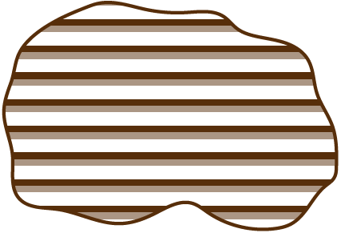
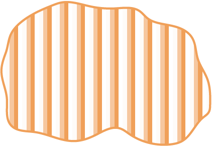
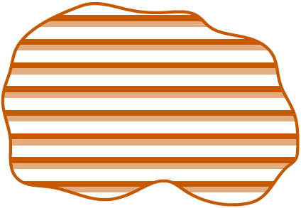
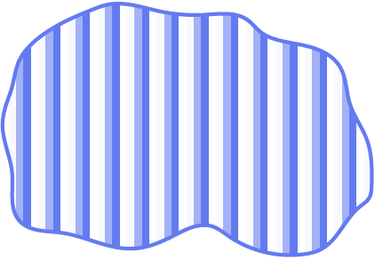
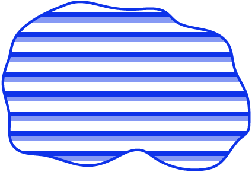
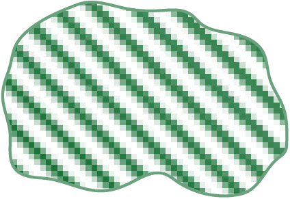
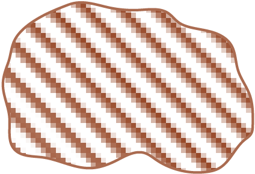
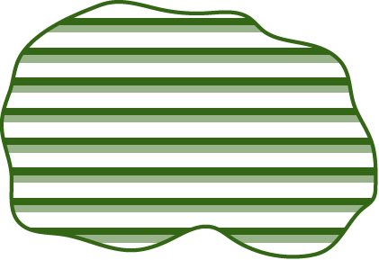

| до 25 | |
| від 25 до 40 | |
| від 40 до 60 | |
| від 60 до 100 | |
| понад 100 |
| Росіян | |
|  | Євреїв |
|  | Поляків |
| Німців | |
| Румунів і молдован | |
|  | Греків |
|  | Болгар |
|  | Білорусів |
|  | Чехів і словаків |
|  | Угорців |
|  | Кримських татар |
|  | Вірменів |
| Гагаузів | |
|  | Циган |
| Російські | |
| Єврейські | |
| Польські | |
| Німецькі | |
| Грецькі | |
| Болгарські |
| У сусідніх державах |
| Західний кордон СРСР у 1921-1939 рр. |
| Межа української суцільної етнічної території |
| до 50 | |
| від 50 до 100 | |
| від 100 до 250 | |
| від 250 до 500 | |
| понад 500 |
| Росіян | |
| Євреїв | |
| Поляків | |
| Німців | |
| Вірменів |